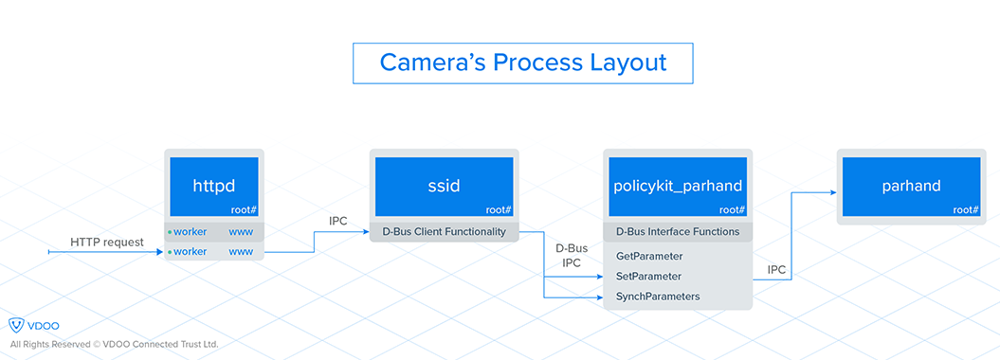
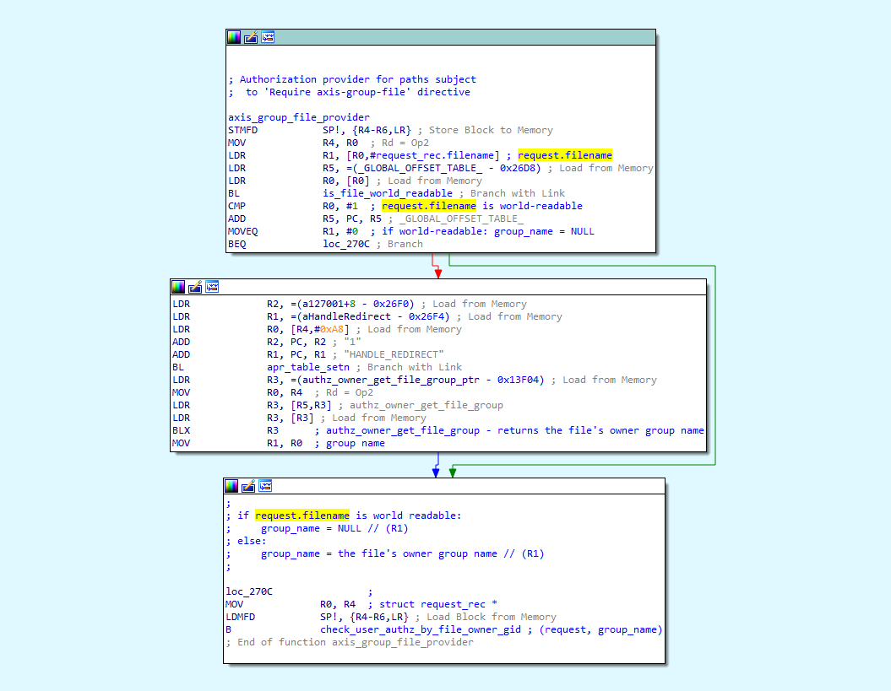
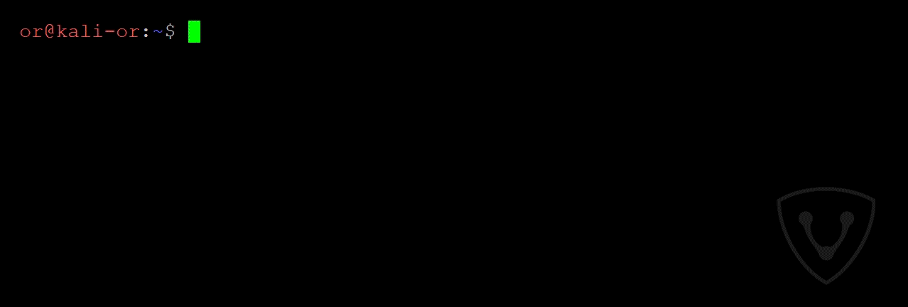
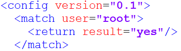
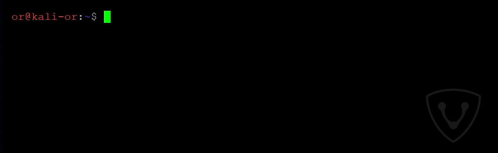
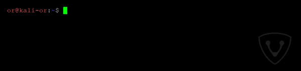
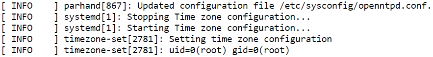
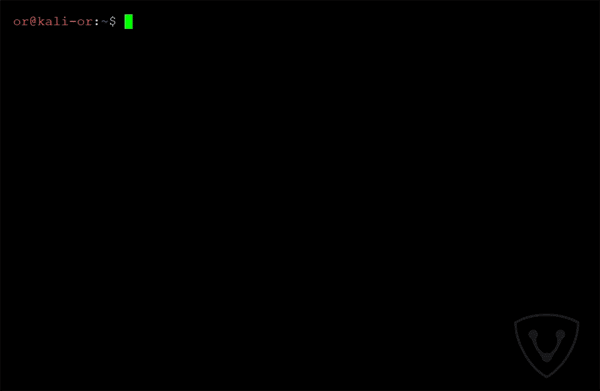

VDOO 披露 Axis 摄像头多个漏洞
在过去的几个月里，VDDO 安全研究团队一直在物联网安防领域进行广泛的安全研究。在大多数情况下，为了提高效率和透明度，研究是和设备供应商一起进行的。
作为研究的一部分，VDOO 研究团队在多个供应商的设备中发现了 0day 漏洞。根据漏洞披露原则，这些漏洞首先向厂商披露，随后会逐步公开。
我们发现来自 Axis 的摄像头是最容易受到攻击的设备之一。我们团队在 Axis 安全摄像头中发现了一个关键漏洞链。攻击者在获得 ip 地址后利用这些漏洞能够远程控制这些摄像头（通过LAN 或者 互联网）。总的来说，VDOO 向 Axis 安全团队公开了 7 个漏洞。
这些漏洞的 CVE编号分别是： CVE-2018-10658, CVE-2018-10659, CVE-2018-10660, CVE-2018-10661, CVE-2018-10662, CVE-2018-10663 以及 CVE-2018-10664。
将报告中 3 个漏洞结合，未授权用户只要能够访问到登录页面，就能够完全控制这些受影响的摄像头。攻击者可以执行的操作有：
- 访问摄像头视频流
- 冻结摄像头视频流
- 控制摄像头 - 将镜头移动到需要的位置，开启/关闭 运动检测
- 将此摄像头纳入僵尸网络中
- 替换摄像头的软件
- 使用摄像头作为网络的渗透点（进行横向移动）
- 渲染无用的摄像头
- 使用摄像头执行其他恶意的任务（如 DDOS 攻击，挖矿等）
390 多个型号的摄像头受到这些漏洞影响。受影响设备清单在这里可以找到。Axis 使用 AC-128401 来标识我们发现的这些漏洞。
据我们所知，这些漏洞还没有被在野利用。因此，也就没有对 Axis 用户造成任何具体的隐私侵犯或安全威胁。
我们强烈推荐没有更新固件 Axis 用户立即更新固件或通过其他方法减低风险。请参阅下面 FAQ 部分的说明。
我们也推荐其他摄像头供应商遵循文末我们的推荐来避免和缓和类似的漏洞。
关于 VDOO
VDOO 是一个家致力于改变无保护联网设备现状的技术驱动公司。VDOO 正在构建一系列产品，以支持制造商在开发阶段将安全性嵌入到他们的联网设备中，并支持开发后的安全。
除了开发产品和服务外，VDOO 还为联网设备广泛研究投入大量的精力。安全摄像头是本研究的一个重点领域。
VDOO 研究目标是提供知识和工具来降低风险，同时激励设备制造商在他们的产品中实现正确的安全性。我们在 VDOO 认为，适当地实现安全要点将极大地减少设备漏洞被利用的机会。
这是我们在安防领域的第二份报告。
第一份关于 Foscan 摄像头的报告，发布在这里。有关我们所采用的研究方法的更多细节，在这里可以找到。
技术概要
摄像头运行的是 Linux 系统，中间件采用了 Apache httpd，Axis 开发了专有模块。web 服务器根目录的文件访问由 Axis 自定义的授权代码控制，这段授权代码在模块 mod_authz_axisgroupfile.so 中。通过使用专有模块 mod_trax.so,web 服务器将某些请求转发给其他进程，这些请求使用 Apache 配置文件中的特殊指令（如TransferMine）来处理。例如，以 .shtm、.shtml、.srv 为后缀的文件请求会转发给 /bin/ssid 进程。ssid 进程以 root 权限运行，处理 .src 的文件与 .shtm 和 .shtml 的请求不同，只有已授权的用户才能请求 .srv 文件。系统的一些守护进程通信是通过使用 dbus 进程间通信机制来实现的。此外，摄像头中有一个专用系统来管理内部参数。进程 /bin/parhand（参数处理程序）负责存储、获取、更新参数。例如，当用户通过 web 界面设置一个参数是，相关的 CGI 脚本（param.cgi）将 set-parameter 请求转发给 parhand 进程，该进程验证访问权限，并将参数的值存储在相应的配置文件中。一些参数以 shell 变量赋值的格式保存在配置文件末尾，然后在一些服务的启动脚本中导入（执行）。另一个有趣的进程是 /usr/sbin/policykit_parhand，它提供了policykitparhand dbus-interface，还包括有设置 parhand-parameters 值的函数。

攻击者以特殊顺序利用最新发现的 7 个漏洞中的 3 个能够获取到 root 权限的 shell。
攻击流程如下：
- 第一步：攻击者使用授权绕过漏洞（CVE-2018-10661）。利用这个漏洞攻击者可以发送未授权 HTTP 请求·到 /bin/ssid 中的 .srv 功能（处理 .srv 请求）。在正常情况下，只有授权的用户才能访问该功能。
- 第二步：攻击者使用一个不受限制（CVE-2018-10662）的接口向设备总线发送任意 dbus 消息。这个接口可从 /bin/ssid 的 .srv 中获得。由于 /bin/ssid 以 root 权限运行，这些已授权的 dbus 消息将调用系统 dbus-services 接口（否则会受到严格的授权策略的约束）。攻击者选择发送 dbus 消息到这一类的 dbus-services 接口，例如 PoclicyKitParhand。它提供一个可以修改 parhand 参数的函数。现在攻击者具备了控制设备的 parhand 的参数值的能力了（见下一个漏洞）。
- 第三步：利用命令执行漏洞（CVE-2018-10660）。一些参数以 shell 变量(“Shell-Mounted”)赋值的格式保存在配置文件末尾，然后在一些服务的启动脚本中以 root 权限执行。正是由于第二步，攻击者才可以发送未授权的请求来设置参数 parhand 的值。通过这样做，攻击者使用带有特殊字符的参数值触发命令注入漏洞，并 root 权限执行命令。
技术深究
本节提供了整个攻击流程中的每个漏洞的细节。
CVE-2018-10661 —— 认证旁路漏洞
此漏洞允许攻击者发送未通过身份验证的请求到 /bin/ssid 的 .srv 功能来绕过 web 服务器的授权机制，而无需提供用户凭证。
漏洞出现在供应商编写的 Apache httpd 授权模块 mod_authz_axisgroupfile.so。
正如上文提到的，摄像头使用的是 Apache httpd 服务器，以及访问 web 根目录以内的文件需要得到 mod_authz_axisgroupfile.so 授权模块授权。
文件根目录下只有唯一一个 .srv 文件 /sm/sm.srv(相对路径)。授权代码用于验证经过身份验证的用户是否有足够的权限才能通过。在获得授权后，web 服务器被配置为使用特定程序处理以 .srv 拓展（.srv 处理代码）结束的路径请求。
问题总结，在发送请求时，如果后面接上反斜杠并以 .srv 后缀(例如 http://CAMERA_IP/index.html/a.srv )，那么授权程序会认为是向 index.html 发送的标准请求，因此获得授权许可。而请求也会被视为对 .srv 路径的合法请求，因此会被 .srv 处理程序同时处理。
这是由于 web 服务器的一个特性，web 服务器处理跟随在实际的文件名后面的路径字符串（称为 PATH_INFO）。https://tools.ietf.org/html/rfc3875#section-4.1.5
当收到 http://CAMERA_IP/index.html/a.srv 的 HTTP 请求时，会出现以下（抽象的）逻辑。
- 当 Apache httpd 解析 URI 请求时，他在请求的 request_rec 结构体中设置以下成员字段。
- uri = “/index.html/a.srv”
- filename = “/usr/html/index.html” # 假设 web 根目录是 /usr/html
- path_info = “/a.srv”
对 web 根目录下的文件访问由 Axis 自定义的授权代码 so 模块控制（由于 httpd 配置文件中的 /usr/html 目录指令中需要 axis-group-file 指令）。
自定义的权限代码执行授权验证仅基于 request.filename,会忽略 path_info 特性的存在，因此授予 /index.html/a.srv 的访问权限。应为请求被认为是针对可读文件 /usr/html/index.html（不需要任何身份验证）。
既然请求获得了授权，那么配置的
<LocationMatch “.+\.(shtml|shtm|srv)($|&)”>指令与 URI（我们请求的完整 uri，见上文）进行正则匹配。因为通过正则表达式匹配到的 URI 都是以 .srv 结尾，因此调用 .srv 处理代码 - “TransferMime /var/run/ssid/ssidsocket” 处理。它的功能是将请求传输到 /var/run/ssid/ssidsocket unix 套接字，以便 /bin/ssid 进程处理.随后，/bin/ssid 进程接收到这个请求检查其（完整的）URI，并将请求视为对 .srv 文件的合法请求 —— 允许请求到达 .srv 功能。

在 mod_authz_axisgroupfile.so 模块中 axis_group_file_provider 函数的 IDA 截图可以看到，它被注册(通过 ap_register_auth_provider 函数)为路径(受到 Require axis-group-file 指令限制的路径)授权提供程序。在截图的上部可以看到， request.filename 用于检查文件是否可以被读取。在我们上面例子中，request.filename 的可读文件路径为 /usr/html/index.html。接下来程序调用参数 group_name 为空的 check_user_authz_by_file_owner_gid 函数。 当 group_name 为空时，后面的函数会跳过所有授权检查并授予对请求的访问权。
因此，攻击者将获得对 /bin/ssid 的 .srv 功能的未授权访问。
POC
为了展示能够到达 /bin/ssid 的 .srv 功能，我们发送一个带有 return_page 参数的请求。这是用于 HTTP 重定向的一个特殊参数。 当参数值（字符串 “it_worked”）出现在响应中，我们就知道了我们已经到达了 /bin/ssid 的 .srv 功能。

CVE-2018-10662 —— .srv 功能用户不受限制的 dbus 访问
达到 /bin/ssid 的 .srv 功能的合法请求可以通过在请求的查询字符串中设置操作参数来选择其中的一个功能。其中的一个功能是 dbus，它允许用户以 root（/bin/ssid 进程的 uid 和 gid） 权限调用任何 dbus 请求，并且不会受到目的地或者内容的限制。由于是来自 root 进程的 dbus 请求 —— 被授权不受限制的访问许多 dbus 服务接口。之所以会这样，是因为旨在限制此类请求的授权机制 PliocyKit 被配置成为来自 root 的请求自动授予访问权。

查看 PolicyKit.conf 手册得知，/etc/PolicyKit/PolicyKit.conf 最初设置为 “yes” 意味着已授予权限。
虽然 /bin/ssid 中 的 dbus 接口仅用于从某些特定的启用了 dbus 的服务中获取特定值，但是它暴露了更广泛的功能，从而产生了安全后果。
例如，该接口允许用户控制设备 parhand 参数的任意值。可以通过发送 dbus 请求来调用 policykit_parhand 进程的 dbus-interface (PolicyKitParhand)函数来实现。这个接口提供了可由 root dbus-client 调用的 SetParameter 和 SynchParameter 方法。通过在执行 SynchParameter 后面的 SetParameter，用户可以设置任意的 parhand 参数值并应用更改。
POC
摄像头的 parhand 参数值 Image.I0.Overlay.Enabled 用来控制是否在视频上方显示图片。例如，我们利用这个漏洞把它的值从 “no” 改为 “yes”。

在存在此漏洞的摄像头上运行这些命令后，视频的左上方会叠加一张图片（默认是 Axis 的小标志）。可以登录到 web 界面查看：
CVE-2018-1066 —— shell 命令注入漏洞
需要有修改参数 parhand 的权限才能利用这个漏洞。这可以通过以下几步实现：
- 获得/拥有管理员权限（通过使用 cgi 接口）
- 在 upnp 守护进程中执行代码
- 找到其他方法来控制 parhand 参数 —— CVE-2018-10662 在直接调用 policykit_parhand 函数的示例中实现了这一点(见上文)。
parhand 参数处理程序负责获取、存储、更改设备的许多内部参数。当用户通过 web 界面设置参数时，相关的 CGI 脚本（param.cgi） 转发设置参数请求到二进制文件 parhand,它检查访问权限，并将参数值保存在相关的配置文件中。
一些参数用于提供 shell 脚本，并被定义为 shell 挂载（在 parhand 配置文件中 mount =“shell()”）。参数值由 parhand shell 解析器解析，它不清理特殊的 shell 字符，也不引用参数值。其中的一些参数（例如，我们使用的 Time.DEST.Enable）以 shell 赋值的格式（例如，FOO=Bar）保存在配置（例如，/etc/sysconfig/openntpd.conf）文件末尾。之后，shell 初始化脚本（例如，parhand-systemctl restart time-source.service），它们作为设置命令的结果运行，该命令在为参数应用新值时执行 —— 通过 sync 命令。
shell 脚本直接执行配置文件（目的是包含配置参数），并且通过使用分号(“;”)设置参数值，使我们能够以 root 权限注入任意命令。
这个漏洞的关键因素在于:
- 解析 shell 环境中输入值时缺乏过滤
- 设备使用了一个过时的方法，使用 shell 脚本去是设置参数并将它们以 shell 赋值的方式存贮在文件中，然后执行这些文件。
请注意这些参数不仅能够通过摄像头的 upnp 守护进程设置。如果攻击者恰巧有能力在 UPnP 守护进程中执行代码，也能利用这个漏洞来提升权限。
POC
在可能的选择之外，我们选择使用需要管理员凭证的 param.cgi 接口来触发这个漏洞。我们注入 id 命令，它可以通过标准输出打印出当前用户的用户和组信息。在我们的示例中，标准输出被重定向到了系统日志。

POC 的验证效果 —— 执行这些命令之后，我们以管理员权限登录摄像头的接口查看系统日志（http://CAMERA_IP/axis-cgi/admin/systemlog.cgi），我能够在其中看到 id 命令的输出（末行的 uid 和 gid）。

其他漏洞
这一节中介绍的是在上面攻击中没有使用到的四个漏洞的细节。
CVE-2018-10664 —— 使 httpd 进程崩溃
这个漏洞允许未授权的攻击者击崩 httpd 进程 —— 导致（至少）使用默认配置的用户通过 web 界面查看到的视频界面为黑屏状态。
在触发这个漏洞后，系统日志会出现以下一行（接下来是崩溃转储）。1
[ ERR ] kernel: [ 2819.017996] httpd: httpd: potentially unexpected fatal signal 11.
POC
这个漏洞通过向 .cgi 脚本 URL 发送带有 PATH_INFO 参数并以 .srv 拓展结束的 HTTP 请求触发。
CVE-2018-10663 —— /bin/ssid 进程信息泄露漏洞
这个漏洞不需要任何用户凭证。用户控制着在 /bin/ssid 的 .srv 功能中的查询字符 return_page 和 servermanager_return_page。当在响应构建代码处理时 —— 这些字段的值被缩减为 0x200 字节，并通过使用安全的 __snprintf_chk 函数复制到已分配的 0x200 字节的空间。然后 __snprintf_chk 函数的返回值(假设它们的长度)保存在结构体成员变量中，以便以后计算响应的内容长度。
__snprintf_chk 的返回值保存在结构体成员变量的 IDA 截图（部分）
_snprint_chk 函数的返回值的问题在于，“The number of characters that would have been written if n had been sufficiently large…”（摘自 sprintf 的手册）。这导致计算出来的内容的长度大于实际数据的大小，因此，内存中额外的字节会泄露在响应中。
POC

仔细观察返回值末尾的变化。额外的符号和字符是泄漏的字节，这些字节与内存中的响应缓冲区相邻。
CVE-2018-10658 —— 使 /bin/ssid 进程崩溃
这个漏洞不需要任何用户凭证。未认证的用户能够发送带有特殊的字符 dbus 请求致使 ssid 服务崩溃。崩溃源于 libbus-send.so 共享对象或相似的代码中。它生成的日志如下：
[ INFO ] ssid[2334]: process 2334: arguments to dbus_message_new_method_call() were incorrect, assertion “iface == NULL || _dbus_check_is_valid_interface (iface)” failed in file ../../dbus-1.10.14/dbus/dbus-message.c line 1373.
程序崩溃同样出现在直接调用带有相似字符的 “/usr/bin/dbus-send“ 时。他可能还影响到包含这些代码其他进程。值得注意的是 /bin/ssid 进程将会重启。
POC
CVE-2018-10658 —— 使 /bin/ssid 进程崩溃
未授权用户可以发送（通过 /bin/ssid .srv 接口）特殊构造的命令，该命令将调用 UND undefined ARM 指令（MIPS 或者其他架构的摄像头可能也有类似的情况），这样导致进程崩溃。值得注意的是 /bin/ssid 进程将会重启。
在触发这个漏洞以后会出现以下的日志：1
[ ERR ] kernel: [ 2390.374778] ssid: ssid: potentially unexpected fatal signal 11.
这个漏洞不需要任何的用户凭证。
POC
给设备制造商的建议
我们想谈谈在本研究中分析的摄像机中发现的一些糟糕的架构，它们使得攻击者更容易发现和利用漏洞。我们鼓励设备制造商考虑以下建议。
缺乏特权分离： 这违反了特权分离的概念(https://en.wikipedia.org/wiki/Privilege_separation)，它规定程序应该被分成若干部分 —— 每个部分都限制在它自己需要的特权中。虽然系统中的每个进程都作为 rot 权限运行 —— 任何系统进程中的代码执行漏洞都将导致攻击者提升到 root 权限。另一方面，如果使用高权限的程序越少，攻击者将不得不在一组受限制的进程中发现漏洞，以升级特权。这是一项更困难的任务。
- 例如，在CVE-2018-10662 中 /bin/ssid 有一个不受限制的 dbus 接口 —— 这将允许攻击者调用 dbus 服务函数。如果这个进程没有以 root 权限运行，那么 dbus 授权策略将不允许调用许多 dbus 特权服务函数。但是正由于 /bin/ssid 以 root 权限运行，所有的 dbus 函数都在没有授权限制的情况下暴露给了攻击者。
缺乏适当的输入过滤： 当从外部接口接收输入时，输入应该过滤掉具有潜在威胁的字符。这可以阻止 CVE-2018-10660 —— shell 的特殊字符不会被绕过。
最小化 shell 脚本的使用： 不鼓励将用户输入的参数作为 shell 脚本使用。这将导致 CVE-2018-10660。另外一个需要注意的 —— 替代直接执行 dbus 命令 —— 可以使用 parhand 结构（结合 dbus 和 getters 命令）。
缺乏二进制固件加密： 固件加密会让安全上一个台阶，攻击者更难分析出固件中的漏洞，特别是使用二进制 diffing 方法比较最新的和以前的固件发现和分析补丁 —— 通过这种方法，发现之前版本存在的漏洞。此外，设备包含带有函数名等符号的二进制。这有助与理解代码是如何运行的。另一方面，值得注意的是如果对固件内容采用 隐藏式安全, 固件被正确的加密，那么找到并修复漏洞就变得不那么容易。供应商应该仔细权衡这个问题。
感谢
我们要感谢 Axis 安全团队高效、及时地处理这些安全问题，以及他们专业的沟通能力。
荣誉
Or Peles (@peles_o), VDOO
FAQ 部分
Q1. 我如何知道我的设备是否易受到攻击？
为了验证你的设备是否存在这些漏洞 —— 你需要检查 ACV-128401 受影响设备列表。如果摄像头的固件版本低于 ACV-128401 受影响设备列表中公布的版本，那么你的设备是存在漏洞的。我们强烈建议立即更新固件。去检查你正在使用的设备的固件版本，你可以按照以下几步：
- 使用浏览器访问摄像头。
- 输入用户名和密码。
- 点击 “System” -> “Option” -> “Support” -> “System Overview”。
- 查看固件版本。
如果你有多个设备，那么使用 Axis 设备管理器软件或通过 Axis VAPIX API 以编程方式获取固件版本可能更值得(请参阅 VAPIX 官方文档中的 2.2 节)。
Q2. 如何判断的设备是否已遭受攻击？
你的设备被攻破的几率非常低，因为在发布的时候没有已知的恶意软件利用这些漏洞。
由于物联网恶意软件通常被精心设计以不被发现，所以没有简单的方法可以确定。任何对设备的可疑更改都可能表明您的设备上存在僵尸网络恶意软件。
几种检查的方法：
- 你的密码是否可用（不是应为你忘记了密码） —— 这是你的设备已经被接管的强烈信号。
- 你设备的设置被修改 —— 例如，视频被发送到了另外一个服务器。
- 网络流量激增 —— 如果可能的话，检查路由器网络统计信息。僵尸网络会增加来自摄像头的网络流量。任何流量尖峰都应该提醒你，因为除非你从摄像头上观看视频，否则这个数值应该相对较低。
Q3. 如果已经被攻击，那么有什么建议吗？
在发布时，我们没有发现任何恶意软件滥用这些漏洞。如果您怀疑您的摄像头被攻破，请将摄像头恢复到出厂设置。这样做会将配置恢复到默认设置，允许您连接和升级固件。请记住，如果您使用的固件易受 VDOO 检测到的漏洞的影响，那么该设备可能会成为被攻击的目标，并可能很快再次受到感染。因此，在重新设置设备后，请确保在把摄像头直连到互联网之前执行固件升级。
Q4. 如果我不能更新相机的固件，如何降低风险?
为了减少摄像头远程管理能力被暴露，建议将设备放置在防火墙屏蔽端口 80 和 443 (或摄像头配置中指定的端口)的后面，并且不允许摄像头启动任何出站连接。另一种选择是将设备放在反向代理的后面，该代理阻止我们用于漏洞利用的 URLs (详细信息见上文)。如果需要其他帮助，请联系security@vdoo.com。
Q5. 如何更新摄像头的固件？
升级到最新固件，你可以使用 Axis 设备管理器，摄像头的 web 界面或者 FTP。在 https://www.axis.com/en-in/support/tecnical-notes/how-to-upgrade 页面查看厂商关于固件更新的说明。
原文：VDOO Discovers Significant Vulnerabilities in Axis Cameras
来自安全客